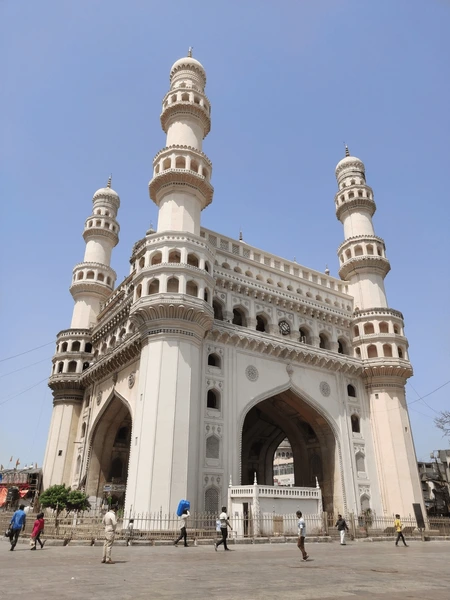
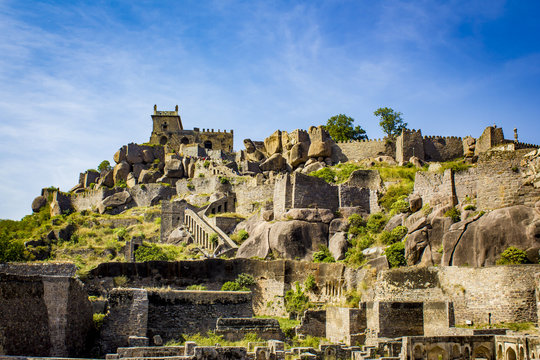
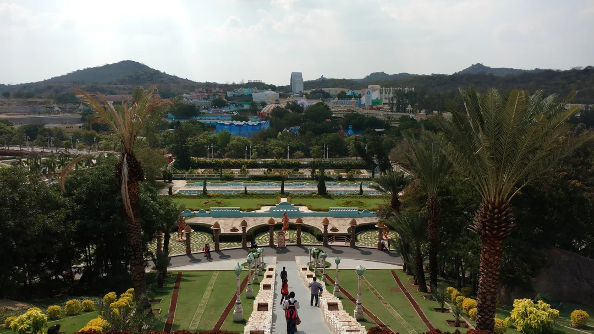
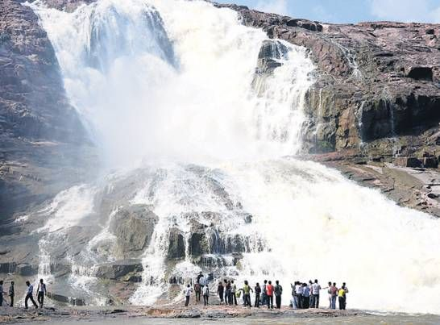
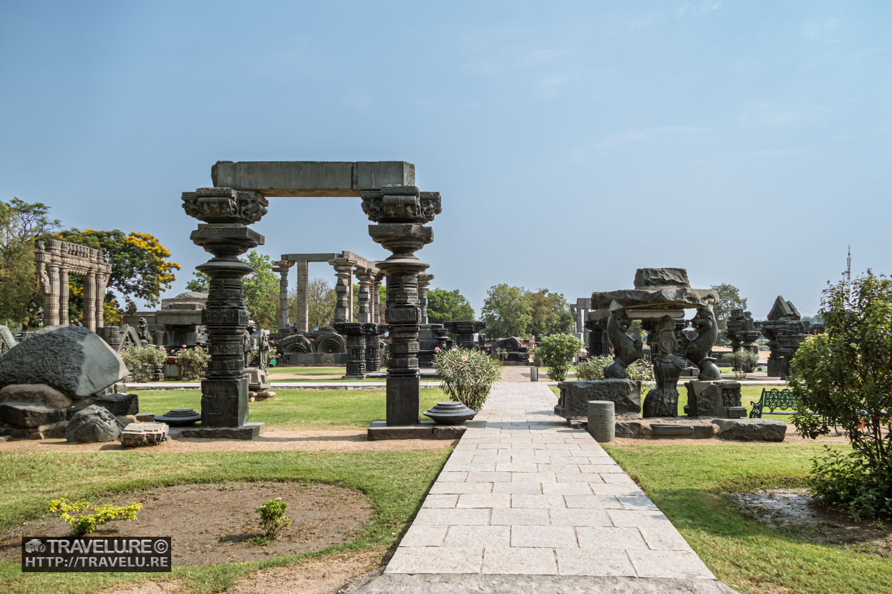

Explore Telangana!
Welcome to Telangana
Telangana is a vibrant state known for its rich history, majestic forts, grand temples,
delectable Hyderabadi cuisine, and modern cities. From the world-famous Charminar
and Golconda Fort to serene waterfalls and wildlife sanctuaries, Telangana is a blend
of tradition and modernity.
Top Places to Visit in Telangana

Charminar (Hyderabad)
An iconic monument and mosque, symbolizing Hyderabad’s culture and architectural brilliance.

Golconda Fort
A majestic fort known for its military architecture, secret passages, and evening light shows.

Ramoji Film City
One of the largest film studios in the world, offering entertainment, film sets, and fun activities.

Kuntala Waterfalls
The highest waterfall in Telangana, surrounded by lush greenery, perfect for nature lovers.

Warangal Fort
An ancient fort reflecting the architectural grandeur of the Kakatiya dynasty.
Best Time to Visit Telangana
-> October to March is the best time to explore Telangana.
The weather is cool and pleasant, ideal for sightseeing in Hyderabad, Warangal,
and nature spots like waterfalls and sanctuaries.
Summers (April–June) can be very hot, while monsoons (July–September) bring heavy rains.